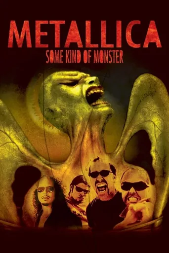

Металлика 2004
Они - живые легенды, монстры рока, иконы миллионов и образцы для подражания, вдохновившие легионы современных музыкантов. Они никогда не врали, чтобы завоевать расположение публики, не кокетничали, не лицемерили и не подстраивались под веянья времени. Они завоёвывали своих поклонников «вживую», в честном бою, зарабатывая свою известность потом и кровью. Они создали одну из величайших рок-групп на свете и грандиозный торговый брэнд, логотип которого украшает стены и заборы по всему миру. Свою невероятную славу и неприкасаемый звёздный статус они, в отличие от многих, заслужили по праву. Они - это Джеймс Хэтфилд, Ларc Ульрих и Кёрк Хэмметт, известные всему земному шару, как «Металлика».
Открыть в каталогеДанные и постеры принадлежат их правообладателям. Этот продукт использует TMDB API, но не одобрен и не сертифицирован TMDB.